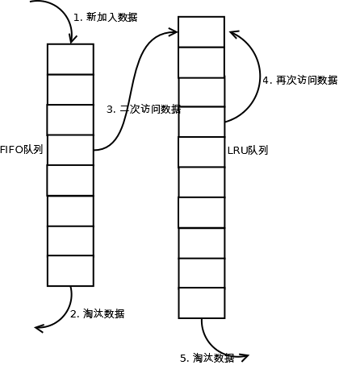
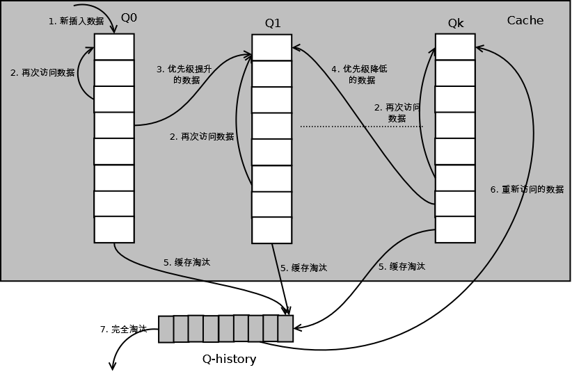

淘汰算法–LRU算法
LRU
原理
LRU（Least recently used，最近最少使用）算法根据数据的历史访问记录来进行淘汰数据，其核心思想是“如果数据最近被访问过，那么将来被访问的几率也更高”
实现
最常见的实现是使用一个链表保存缓存数据，详细算法实现如下
- 新数据插入到链表头部；
- 每当缓存命中（即缓存数据被访问），则将数据移到链表头部；
- 当链表满的时候，将链表尾部的数据丢弃。
分析
【命中率】
当存在热点数据时，LRU的效率很好，但偶发性的、周期性的批量操作会导致LRU命中率急剧下降，缓存污染情况比较严重。
【复杂度】
实现简单。
【代价】
命中时需要遍历链表，找到命中的数据块索引，然后需要将数据移到头部
LRU-K
原理
LRU-K中的K代表最近使用的次数，因此LRU可以认为是LRU-1。LRU-K的主要目的是为了解决LRU算法“缓存污染”的问题，其核心思想是将“最近使用过1次”的判断标准扩展为“最近使用过K次”
实现
相比LRU，LRU-K需要多维护一个队列，用于记录所有缓存数据被访问的历史。只有当数据的访问次数达到K次的时候，才将数据放入缓存。当需要淘汰数据时，LRU-K会淘汰第K次访问时间距当前时间最大的数据。详细实现如下

- 数据第一次被访问，加入到访问历史列表；
- 如果数据在访问历史列表里后没有达到K次访问，则按照一定规则（FIFO，LRU）淘汰；
- 当访问历史队列中的数据访问次数达到K次后，将数据索引从历史队列删除，将数据移到缓存队列中，并缓存此数据，缓存队列重新按照时间排序；
- 缓存数据队列中被再次访问后，重新排序；
- 需要淘汰数据时，淘汰缓存队列中排在末尾的数据，即：淘汰“倒数第K次访问离现在最久”的数据。
LRU-K具有LRU的优点，同时能够避免LRU的缺点，实际应用中LRU-2是综合各种因素后最优的选择，LRU-3或者更大的K值命中率会高，但适应性差，需要大量的数据访问才能将历史访问记录清除掉。
分析
【命中率】
LRU-K降低了“缓存污染”带来的问题，命中率比LRU要高。
【复杂度】
LRU-K队列是一个优先级队列，算法复杂度和代价比较高。
【代价】
由于LRU-K还需要记录那些被访问过、但还没有放入缓存的对象，因此内存消耗会比LRU要多；当数据量很大的时候，内存消耗会比较可观。
LRU-K需要基于时间进行排序（可以需要淘汰时再排序，也可以即时排序），CPU消耗比LRU要高。
Two queues(2Q)
原理
Two queues（以下使用2Q代替）算法类似于LRU-2，不同点在于2Q将LRU-2算法中的访问历史队列（注意这不是缓存数据的）改为一个FIFO缓存队列，即：2Q算法有两个缓存队列，一个是FIFO队列，一个是LRU队列。
实现
当数据第一次访问时，2Q算法将数据缓存在FIFO队列里面，当数据第二次被访问时，则将数据从FIFO队列移到LRU队列里面，两个队列各自按照自己的方法淘汰数据。详细实现如下

- 新访问的数据插入到FIFO队列；
- 如果数据在FIFO队列中一直没有被再次访问，则最终按照FIFO规则淘汰；
- 如果数据在FIFO队列中被再次访问，则将数据移到LRU队列头部；
- 如果数据在LRU队列再次被访问，则将数据移到LRU队列头部；
- LRU队列淘汰末尾的数据。
注：上图中FIFO队列比LRU队列短，但并不代表这是算法要求，实际应用中两者比例没有硬性规定。
分析
【命中率】
2Q算法的命中率要高于LRU。
【复杂度】
需要两个队列，但两个队列本身都比较简单。
【代价】
FIFO和LRU的代价之和。
2Q算法和LRU-2算法命中率类似，内存消耗也比较接近，但对于最后缓存的数据来说，2Q会减少一次从原始存储读取数据或者计算数据的操作
Multi Queue（MQ）
原理
MQ算法根据访问频率将数据划分为多个队列，不同的队列具有不同的访问优先级，其核心思想是：优先缓存访问次数多的数据
实现
MQ算法将缓存划分为多个LRU队列，每个队列对应不同的访问优先级。访问优先级是根据访问次数计算出来的，例如
详细的算法结构图如下，Q0，Q1….Qk代表不同的优先级队列，Q-history代表从缓存中淘汰数据，但记录了数据的索引和引用次数的队列

如上图，算法详细描述如下：
- 新插入的数据放入Q0；
- 每个队列按照LRU管理数据；
- 当数据的访问次数达到一定次数，需要提升优先级时，将数据从当前队列删除，加入到高一级队列的头部；
- 为了防止高优先级数据永远不被淘汰，当数据在指定的时间里访问没有被访问时，需要降低优先级，将数据从当前队列删除，加入到低一级的队列头部；
- 需要淘汰数据时，从最低一级队列开始按照LRU淘汰；每个队列淘汰数据时，将数据从缓存中删除，将数据索引加入Q-history头部；
- 如果数据在Q-history中被重新访问，则重新计算其优先级，移到目标队列的头部；
- Q-history按照LRU淘汰数据的索引。
分析
【命中率】
MQ降低了“缓存污染”带来的问题，命中率比LRU要高。
【复杂度】
MQ需要维护多个队列，且需要维护每个数据的访问时间，复杂度比LRU高。
【代价】
MQ需要记录每个数据的访问时间，需要定时扫描所有队列，代价比LRU要高。
注：虽然MQ的队列看起来数量比较多，但由于所有队列之和受限于缓存容量的大小，因此这里多个队列长度之和和一个LRU队列是一样的，因此队列扫描性能也相近。
LRU类算法对比
由于不同的访问模型导致命中率变化较大，此处对比仅基于理论定性分析，不做定量分析。
| 对比点 | 对比 |
|---|---|
| 命中率 | LRU-2 > MQ(2) > 2Q > LRU |
| 复杂度 | LRU-2 > MQ(2) > 2Q > LRU |
| 代价 | LRU-2 > MQ(2) > 2Q > LRU |
实际应用中需要根据业务的需求和对数据的访问情况进行选择，并不是命中率越高越好。例如：虽然LRU看起来命中率会低一些，且存在”缓存污染“的问题，但由于其简单和代价小，实际应用中反而应用更多
LRU 算法实现
java中最简单的LRU算法实现，就是利用jdk的LinkedHashMap，覆写其中的removeEldestEntry(Map.Entry)方法即可
如果你去看LinkedHashMap的源码可知，LRU算法是通过双向链表来实现，当某个位置被命中，通过调整链表的指向将该位置调整到头位置，新加入的内容直接放在链表头，如此一来，最近被命中的内容就向链表头移动，需要替换时，链表最后的位置就是最近最少使用的位置
|
|
基于双链表 的LRU实现:
传统意义的LRU算法是为每一个Cache对象设置一个计数器，每次Cache命中则给计数器+1，而Cache用完，需要淘汰旧内容，放置新内容时，就查看所有的计数器，并将最少使用的内容替换掉。
它的弊端很明显，如果Cache的数量少，问题不会很大， 但是如果Cache的空间过大，达到10W或者100W以上，一旦需要淘汰，则需要遍历所有计算器，其性能与资源消耗是巨大的。效率也就非常的慢了。
它的原理： 将Cache的所有位置都用双连表连接起来，当一个位置被命中之后，就将通过调整链表的指向，将该位置调整到链表头的位置，新加入的Cache直接加到链表头中。
这样，在多次进行Cache操作后，最近被命中的，就会被向链表头方向移动，而没有命中的，而想链表后面移动，链表尾则表示最近最少使用的Cache。
当需要替换内容时候，链表的最后位置就是最少被命中的位置，我们只需要淘汰链表最后的部分即可。
上面说了这么多的理论， 下面用代码来实现一个LRU策略的缓存。
我们用一个对象来表示Cache，并实现双链表
|
|
下面给出完整的实现，这个类也被Tomcat所使用（ org.apache.tomcat.util.collections.LRUCache），但是在tomcat6.x版本中，已经被弃用，使用另外其他的缓存类来替代它
|
|
ref:
https://blog.csdn.net/crazyhuntsman/article/details/81981014